Predator/prey mass ratio distributions from stomach data
Gustav Delius
2019-08-01
Source:vignettes/PPMR_distributions.Rmd
PPMR_distributions.RmdIntroduction
We want to use summarise observations of the stomach content data by fitting distributions to the observed predator/prey mass ratio. This can then later be used to derive appropriate expressions for the predation kernel in size-spectrum models.
In this analysis we will completely ignore the species identity of the prey, looking only at the size of the prey. For each predator species we also amalgamate all observations in the data sets and do not disaggregate by other variables like place or time. Before we believe anything derived here, the influence of such other factors should be investigated. This is only meant to be a start. More reliable results could perhaps be obtained using mixed effects models.
A central assumption in the analysis done here is that the ratio between predator size and prey size is independent of the predator size. The validity of this assumption should of course be checked carefully.
We will here use two datasets, one containing stomach data for Anchovy and Sardines, the other being the much larger dataset compiled by Barnes et.al. This analysis should next be extended to other data sets.
We will fit two kinds of distributions to the observations of the predator/prey size ratio: lognormal and truncated power law. In terms of the log of the predator/prey size ratio this corresponds to the normal and the truncated exponential distributions.
A crucial observation that we are going to make is that when fitting distributions one should consider both the number distributions and the biomass distributions. Even if we have a good fit for the number distribution the resulting fit for the biomass distribution may be very wrong.
Anchovy and sardine dataset
Mariella Canales has data of stomach content for anchovy and sardine. Mariella can provide more details of the origin of this data.
stomach <- read_csv("../../stomach_data/data/AnchovyAndSardine.csv")
stomach## # A tibble: 226 × 4
## Species wprey wpredator Nprey
## <chr> <dbl> <dbl> <dbl>
## 1 anchovy 0.0000000168 15.3 106.
## 2 anchovy 0.00000000275 15.3 5.05
## 3 anchovy 0.00000000619 15.3 8.77
## 4 anchovy 0.0000000015 15.3 12500.
## 5 anchovy 0.00000000353 15.3 33.9
## 6 anchovy 0.000000101 15.3 37.3
## 7 anchovy 0.0000000300 15.3 1.23
## 8 anchovy 0.00000000394 15.3 9756.
## 9 anchovy 0.00000000078 15.3 0.189
## 10 anchovy 0.0000000356 15.3 10.2
## # ℹ 216 more rowsThe wprey variable is the typical weight of an
individual of a particular prey species and Nprey is the
average number of individuals of that species in a stomach and
wpredator is the weight of the predator. The table reports
the same predator size for all anchovy and the same predator size for
all sardine because all predators of each species had very similar
sizes.
We capitalise the species names and add a column for the log of the predator/prey mass ratio .
stomach <- stomach %>%
mutate(Species = str_to_title(Species),
l = log(wpredator / wprey))
stomach## # A tibble: 226 × 5
## Species wprey wpredator Nprey l
## <chr> <dbl> <dbl> <dbl> <dbl>
## 1 Anchovy 0.0000000168 15.3 106. 20.6
## 2 Anchovy 0.00000000275 15.3 5.05 22.4
## 3 Anchovy 0.00000000619 15.3 8.77 21.6
## 4 Anchovy 0.0000000015 15.3 12500. 23.0
## 5 Anchovy 0.00000000353 15.3 33.9 22.2
## 6 Anchovy 0.000000101 15.3 37.3 18.8
## 7 Anchovy 0.0000000300 15.3 1.23 20.1
## 8 Anchovy 0.00000000394 15.3 9756. 22.1
## 9 Anchovy 0.00000000078 15.3 0.189 23.7
## 10 Anchovy 0.0000000356 15.3 10.2 19.9
## # ℹ 216 more rowsLet’s look at the smallest and largest prey items as well as the log of the smallest and largest predator/prey mass ratios in the data:
stomach %>%
group_by(Species) %>%
summarise(wprey_min = min(wprey),
wprey_max = max(wprey),
lmin = min(l),
lmax = max(l))## # A tibble: 2 × 5
## Species wprey_min wprey_max lmin lmax
## <chr> <dbl> <dbl> <dbl> <dbl>
## 1 Anchovy 1.58e-10 0.0174 6.78 25.3
## 2 Sardine 1.9 e-10 0.0125 9.07 27.1We can not say for sure that anchovy and sardine do not eat larger prey than contained in the dataset, because large prey are rare.
## # A tibble: 2 × 5
## # Groups: Species [2]
## Species wprey wpredator Nprey l
## <chr> <dbl> <dbl> <dbl> <dbl>
## 1 Anchovy 0.0174 15.3 0.0000943 6.78
## 2 Sardine 0.0125 109. 0.0044 9.07Remember that Nprey is the average number of prey
individuals of that size in a stomach. So the largest prey item observed
in an anchovy stomach only showed up in one of 10.000 stomachs. One
would need a very large sample of stomachs to have a good chance to
observe any larger prey. So to get a better value for the largest
possible prey one should look at the morphology of the predator
species.
Similarly, we can not be certain of the true size of the smallest possible prey items because it may just have been to difficult to identify cells of the smallest plankton prey, especially as they will be digested very quickly. Again it may make sense to complement this study by a look at the morphology of the gill rakers, although one has to acknowledge that gill rakers can, when they become clogged, filter out smaller individuals than would be indicated by the spacing of the rakers.
We will have more discussion of the relation between the stomach data and the actual diet of the predator, taking digestion into account, later. For now we concentrate on describing the stomach data.
There are two ways to visualise the size-distribution of the prey items: we can bin the data and plot histograms, or we can plot density kernel estimates. We’ll start with a look at binned data.
Histograms
We can estimate the probability densities from the data by binning the data in equally sized bins of the relevant variable and plotting histograms of the number of prey items in each bin.
We use size bins that are equally-spaced on a logarithmic axis
between the smallest and largest predator/prey size ratio. For later use
we create a vector breaks with the bin boundaries:
no_bins <- 30 # Number of bins
binsize <- (max(stomach$l) - min(stomach$l)) / (no_bins - 1)
breaks <- seq(min(stomach$l) - binsize/2,
by = binsize, length.out = no_bins + 1)To get the correct normalisation of the densities, the height of the
bars should be equal to the number of prey items divided by the width of
the bin divided by the total number of prey items. That way the area
under the histogram will be equal to 1. We also add a column
l with the log of predator/prey mass ratio at the centre of
the each bin.
binned_stomach <- stomach %>%
# bin data
mutate(cut = cut(l, breaks = breaks, right = FALSE,
labels = FALSE)) %>%
group_by(Species, cut) %>%
summarise(Numbers = sum(Nprey),
Biomass = sum(Nprey * wprey)) %>%
# normalise
mutate(Numbers = Numbers / sum(Numbers) / binsize,
Biomass = Biomass / sum(Biomass) / binsize) %>%
# column for predator/prey size ratio
mutate(l = map_dbl(cut, function(idx) breaks[idx] + binsize/2))
binned_stomach## # A tibble: 41 × 5
## # Groups: Species [2]
## Species cut Numbers Biomass l
## <chr> <int> <dbl> <dbl> <dbl>
## 1 Anchovy 1 0.0000000323 0.000557 6.78
## 2 Anchovy 2 0.000104 1.21 7.48
## 3 Anchovy 7 0.000103 0.0367 11.0
## 4 Anchovy 8 0.000696 0.103 11.7
## 5 Anchovy 9 0.00000209 0.000169 12.4
## 6 Anchovy 10 0.000130 0.00719 13.1
## 7 Anchovy 11 0.0000773 0.00153 13.8
## 8 Anchovy 12 0.0000733 0.000599 14.5
## 9 Anchovy 15 0.0372 0.0503 16.6
## 10 Anchovy 16 0.000650 0.000465 17.3
## # ℹ 31 more rowsWe convert this into the long table format preferred by ggplot2.
binned_stomach <- binned_stomach %>%
gather(key = "Type", value = "Density", Numbers, Biomass)We can now easily plot the histograms that represent estimates of the normalised number density and the normalised biomass density .
binned_stomach %>%
ggplot(aes(l, Density, fill = Type)) +
geom_col(position = "dodge") +
facet_grid(rows = vars(Species), scales = "free_y") +
xlab("Log of Predator/Prey mass ratio") +
expand_limits(x = c(0, 30))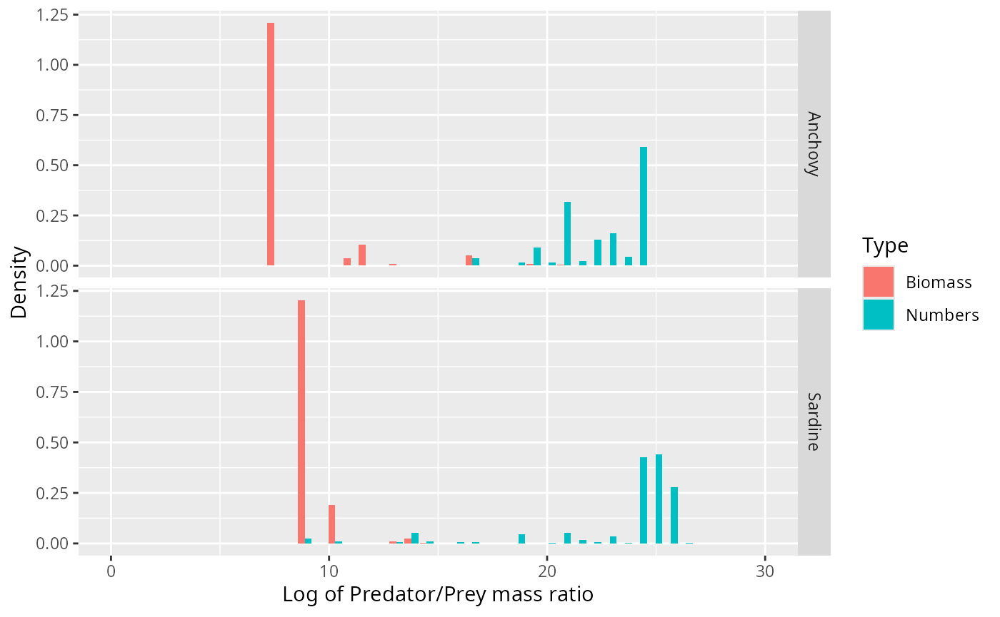
Note how the biomass of prey is concentrated at very different predator/prey mass ratios than the number of prey. The information about the biomass distribution is contained mostly in the left tail of the number density and, vice versa, the information about the number distribution is mostly contained in the right tail of the biomass density.
Kernel density estimation
An alternative way to estimate densities from data is provided by the kernel density estimation method. Here, rather than aggregating observations in bins, each observation contributes its own little Gaussian centred at that data value. The estimated density function is obtained by summing all these little Gaussians together. That produces a smoother estimate than the histogram method. The width of the individual Gaussians plays the same role as the bins size. There are some heuristics that allow R to choose a sensible width that provides a good summary of the data. We decrease that bandwidth by a factor of 1/2 to get a slightly more detailed view:
adjust <- 1/2 # decrease bandwidth for kernel estimate
stomach <- stomach %>%
group_by(Species) %>%
mutate(weight_numbers = Nprey / sum(Nprey),
weight_biomass = Nprey * wprey / sum(Nprey * wprey))
ggplot(stomach) +
geom_density(aes(l, weight = weight_numbers,
fill = "Numbers"),
adjust = adjust) +
geom_density(aes(l, weight = weight_biomass,
fill = "Biomass"),
adjust = adjust) +
facet_grid(rows = vars(Species), scales = "free_y") +
xlab("Log of predator/prey mass ratio") +
expand_limits(x = c(0, 29))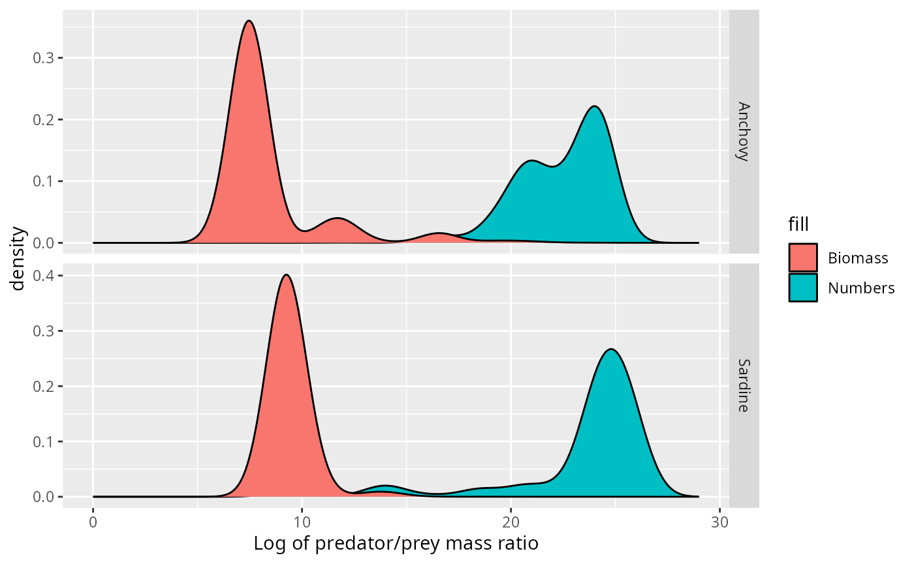
This idea of spreading out each observation into a little Gaussian is particularly appropriate for this dataset, where the size of the observed prey item is only estimated from the species identity of the prey item and where also the predator size is not know exactly. Both of these lead to uncertainty in the predator/prey size ratio.
Gaussian does not fit
Let us start by observing that it would be very inappropriate to use a Gaussian curve to describe these densities. We illustrate this in the case of the Anchovy. We plot the normal distribution with the same mean and standard deviation as the data on top of the histogram for the number distribution.
chosen_species = "Anchovy"
weighted.sd <- function(x, w) {
sqrt(sum(w * (x - weighted.mean(x, w))^2))
}
fit <- stomach %>%
filter(Species == chosen_species) %>%
summarise(mean = weighted.mean(l, weight_numbers),
sd = weighted.sd(l, weight_numbers))
stomach %>%
filter(Species == chosen_species) %>%
ggplot() +
geom_density(aes(l, weight = weight_numbers),
fill = "#00BFC4", adjust = adjust) +
xlab("Log of Predator/Prey mass ratio") +
stat_function(fun = dnorm,
args = list(mean = fit$mean,
sd = fit$sd),
colour = "blue") +
expand_limits(x = c(6, 30))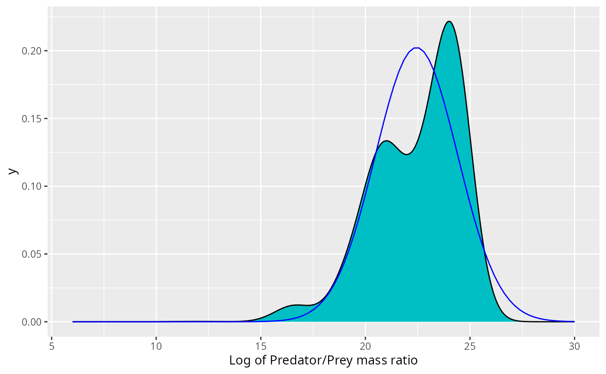
This may not look so bad. However, if the size distribution was correctly described by the normal distribution, i.e., if then the biomass density would be given by Thus the biomass would also be normally distributed with the mean shifted by . Putting this into the same picture gives
stomach %>%
filter(Species == chosen_species) %>%
ggplot() +
geom_density(aes(l, weight = weight_numbers,
fill = "Numbers"),
adjust = adjust) +
geom_density(aes(l, weight = weight_biomass,
fill = "Biomass"),
adjust = adjust) +
xlab("Log of Predator/Prey mass ratio") +
stat_function(fun = dnorm,
args = list(mean = fit$mean,
sd = fit$sd),
colour = "blue") +
stat_function(fun = dnorm,
args = list(mean = fit$mean - fit$sd^2,
sd = fit$sd),
colour = "red") +
expand_limits(x = c(0, 30))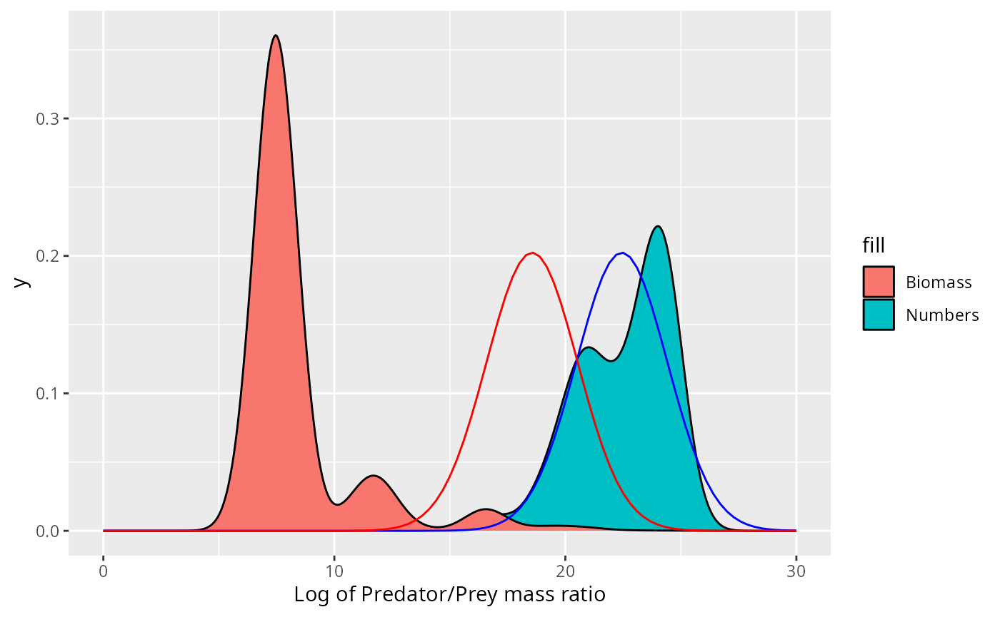
This does not fit the actual biomass distribution at all!
For the Sardine the normal distribution fits neither the number density nor the biomass density.
chosen_species = "Sardine"
weighted.sd <- function(x, w) {
sqrt(sum(w * (x - weighted.mean(x, w))^2))
}
fit <- stomach %>%
filter(Species == chosen_species) %>%
summarise(mean = weighted.mean(l, weight_numbers),
sd = weighted.sd(l, weight_numbers))
stomach %>%
filter(Species == chosen_species) %>%
ggplot() +
geom_density(aes(l, weight = weight_numbers,
fill = "Numbers"),
adjust = adjust) +
geom_density(aes(l, weight = weight_biomass,
fill = "Biomass"),
adjust = adjust) +
xlab("Log of Predator/Prey mass ratio") +
stat_function(fun = dnorm,
args = list(mean = fit$mean,
sd = fit$sd),
colour = "blue") +
stat_function(fun = dnorm,
args = list(mean = fit$mean - fit$sd^2,
sd = fit$sd),
colour = "red") +
expand_limits(x = c(0, 30))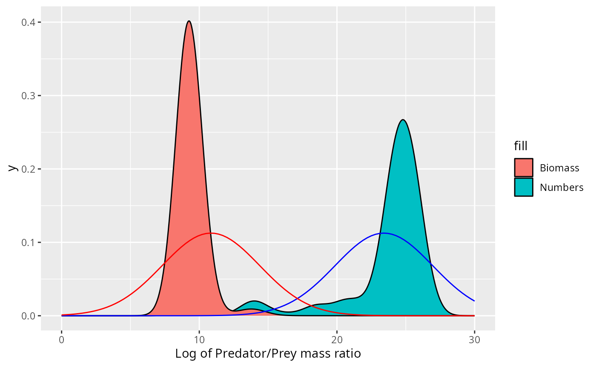
Exponential fits better
We have learned above that the small number of large individuals in the stomach provide the dominant contribution to the biomass consumed by the predator and hence are important. To make them more visible, we show the histograms again but now with a logarithmic y-axis
binned_stomach %>%
ggplot(aes(l, Density)) +
geom_col() +
facet_grid(Species ~ Type, scales = "free_y") +
xlab("Log of Predator/Prey mass ratio") +
scale_y_continuous(trans = "log")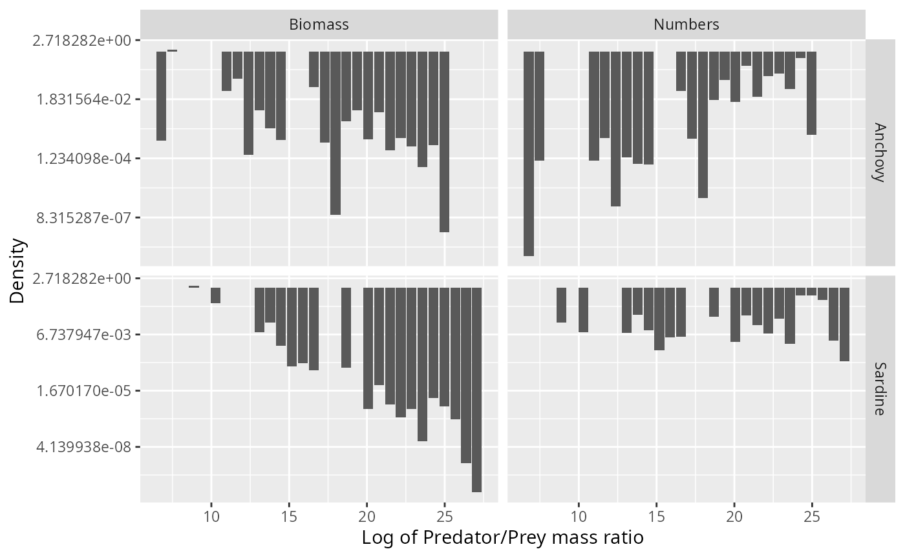
This motivates us to try to fit a truncated exponential distribution to the data (which would be a truncated power-law distribution when working with the predator/prey mass ratio instead of its logarithm).
binned_stomach %>%
ggplot(aes(l, Density)) +
geom_col() +
geom_smooth(method = "lm", se = FALSE) +
facet_grid(Species ~ Type, scales = "free_y") +
xlab("Log of Predator/Prey mass ratio") +
scale_y_continuous(trans = "log")## `geom_smooth()` using formula = 'y ~ x'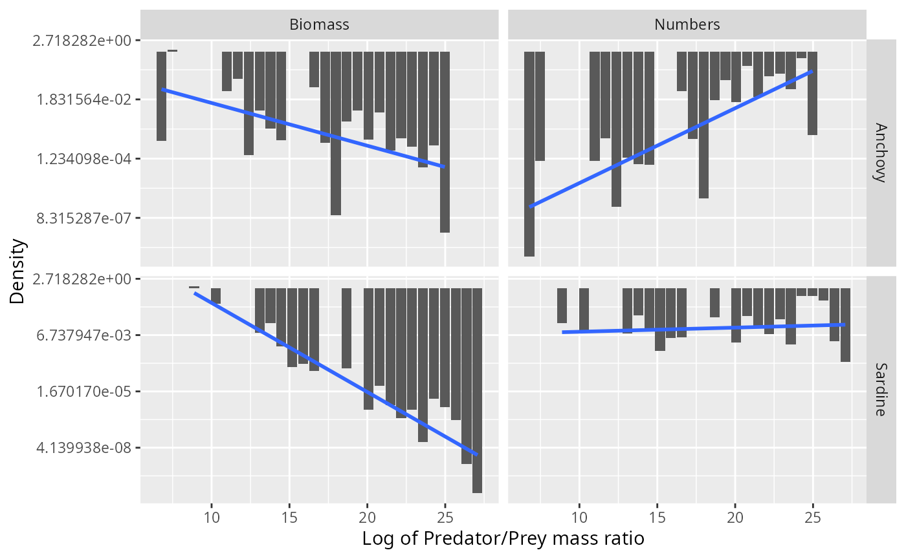
Of course again we have the problem that the biomass density is not independent of the number density, so fitting separate distributions to the two is not appropriate. If we assume that the number distribution follows the exponential distribution, i.e., for some parameter then the biomass distribution follows an exponential distribution with parameter : Amazingly, the parameters of the independently fitted distributions do almost perfectly have this relationship:
binned_stomach %>%
group_by(Species, Type) %>%
group_modify(~ broom::tidy(lm(log(Density) ~ l, data = .x))) %>%
filter(term == "l")## # A tibble: 4 × 7
## # Groups: Species, Type [4]
## Species Type term estimate std.error statistic p.value
## <chr> <chr> <chr> <dbl> <dbl> <dbl> <dbl>
## 1 Anchovy Biomass l -0.361 0.124 -2.92 8.82e- 3
## 2 Anchovy Numbers l 0.632 0.120 5.24 4.62e- 5
## 3 Sardine Biomass l -0.950 0.0798 -11.9 5.75e-10
## 4 Sardine Numbers l 0.0441 0.0803 0.549 5.90e- 1The parameter of the biomass distribution is almost exactly 1 less than the parameter of the numbers distribution.
Fitting the exponential distribution by fitting a linear model to the logged histogram is not really appropriate. A better method would be to fit directly to the data using the maximum likelihood principle. However one needs to work with a truncated exponential distribution by introducing cutoffs for the distribution at small and large sizes. Using sharp cutoffs leads to problems, as we discuss in Appendix 2. The problems can be avoided by using smooth cutoffs.
Exponential distribution with sigmoidal cutoffs
The simplest way to implement smoother cutoffs at the ends of an
exponential distribution is to multiply by two sigmoidal functions: a
rising one centred near l_l and a falling one near
l_r. So we choose
fl <- function(l, alpha, ll, ul, lr, ur) {
dl <- ll - l
dr <- l - lr
fl <- exp(alpha * l) /
(1 + exp(ul * dl)) /
(1 + exp(ur * dr))
# fl[fl <= 0] <- 0
}
dtexp <- function(l, alpha, ll, ul, lr, ur) {
d <- fl(l, alpha, ll, ul, lr, ur) /
integrate(fl, 0, 30, alpha = alpha,
ll = ll, ul = ul, lr = lr, ur = ur)$value
if (any(d <= 0)) {
stop("The density contains non-positive values when",
" alpha = ", alpha, " ll = ", ll, " ul = ", ul,
" lr = ", lr, " ur = ", ur)
}
return(d)
}We have introduced 4 new parameters into the distribution: is the log of the predator/prey mass ratio around which the sigmoidal switch-on happens and determines the steepness of that switch-on. Similarly is the log of the predator/prey mass ratio around which the sigmoidal switch-off happens and determines the steepness of that switch-off. Here is the plot of an example with switch-on around and switch-off around .
df <- tibble(
l = seq(0, 30, length.out = 200),
d = dtexp(l, 0.1, 5, 1, 25, 1)
)
ggplot(df) +
geom_line(aes(l, d)) +
geom_vline(xintercept = 5, colour = "grey") +
geom_vline(xintercept = 25, colour = "grey")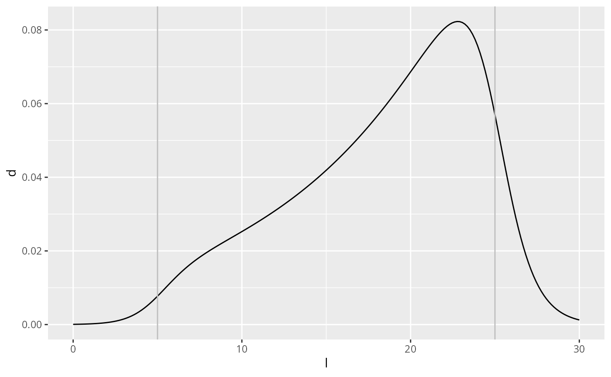
The probability density of the predator/prey mass ratio is then a power-law distribution with exponent and sigmoidal cut-offs:
Maximum likelihood fit
We estimate the 5 parameters by maximum likelihood estimation, which in this case can only be done numerically.
mle_texp <- function(df) {
loglik <- function(alpha, ll, ul, lr, ur) {
L <- dtexp(df$l, alpha, ll, ul, lr, ur)
- sum(log(L) * df$weight_numbers)
}
mle2(loglik, start = list(
alpha = 0.5,
ll = min(df$l),
lr = max(df$l),
ul = 20,
ur = 20))
}
est <- stomach %>%
group_modify(~ broom::tidy(mle_texp(.x))) %>%
select(Species, term, estimate) %>%
spread(term, estimate)
est## # A tibble: 2 × 6
## # Groups: Species [2]
## Species alpha ll lr ul ur
## <chr> <dbl> <dbl> <dbl> <dbl> <dbl>
## 1 Anchovy 0.537 7.18 24.3 20.0 45.8
## 2 Sardine 0.390 8.85 25.9 20.1 29.6
grid = seq(0, 30, length.out = 200)
texpdens <- plyr::ddply(est, "Species", function(df) {
data.frame(
l = grid,
Numbers = dtexp(grid, df$alpha, df$ll, df$ul, df$lr, df$ur),
Biomass = dtexp(grid, df$alpha - 1, df$ll, df$ul, df$lr, df$ur)
)}) %>%
gather(Type, Density, Numbers, Biomass)
ggplot(binned_stomach) +
geom_col(aes(l, Density, fill = Type)) +
facet_grid(Species ~ Type, scales = "free_y") +
xlab("Log of predator/prey mass ratio") +
geom_line(aes(l, Density, colour = Type), data = texpdens)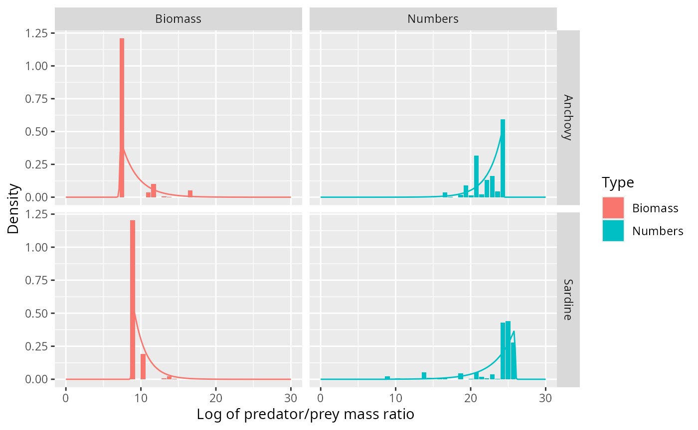
This fits the data much better than the normal distribution.
Barnes dataset
Let us do a similar investigation for a larger stomach data set with more predator species, compiled by Barnes et.al.
We read in the data
stomach_full <- barnes_dataand then select only the relevant columns and remove predator species with fewer than 1000 observations.
stomach <- stomach_full %>%
select(Species = `Predator common name`,
wpredator = `SI predator mass`,
wprey = `SI prey mass`) %>%
group_by(Species) %>%
filter(n() > 1000) %>%
mutate(Nprey = 1,
l = log(wpredator / wprey),
weight_numbers = Nprey / sum(Nprey),
weight_biomass = Nprey * wprey / sum(Nprey * wprey))
stomach## # A tibble: 23,169 × 7
## # Groups: Species [12]
## Species wpredator wprey Nprey l weight_numbers weight_biomass
## <chr> <dbl> <dbl> <dbl> <dbl> <dbl> <dbl>
## 1 Atlantic bluefin t… 61666 3.51 1 9.77 0.000524 0.0000285
## 2 Atlantic bluefin t… 61666 3.51 1 9.77 0.000524 0.0000285
## 3 Atlantic bluefin t… 61666 3.51 1 9.77 0.000524 0.0000285
## 4 Atlantic bluefin t… 61666 4.63 1 9.50 0.000524 0.0000376
## 5 Atlantic bluefin t… 61666 4.63 1 9.50 0.000524 0.0000376
## 6 Atlantic bluefin t… 61666 4.63 1 9.50 0.000524 0.0000376
## 7 Atlantic bluefin t… 61666 4.63 1 9.50 0.000524 0.0000376
## 8 Atlantic bluefin t… 61666 4.63 1 9.50 0.000524 0.0000376
## 9 Atlantic bluefin t… 61666 4.63 1 9.50 0.000524 0.0000376
## 10 Atlantic bluefin t… 61666 5.97 1 9.24 0.000524 0.0000485
## # ℹ 23,159 more rowsThis leaves
unique(stomach$Species)## [1] "Atlantic bluefin tuna" "Atlantic cod"
## [3] "Yellowfin tuna" "Bigeye tuna"
## [5] "Silver hake" "Bluefish"
## [7] "Albacore" "Winter skate"
## [9] "Spurdog / spiny dogfish" "Smooth dogfish"
## [11] "Antarctic fish" "European sea bass"For later purposes we also bin the observations.
no_bins <- 30 # Number of bins
binsize <- (max(stomach$l) - min(stomach$l)) / (no_bins - 1)
breaks <- seq(min(stomach$l) - binsize/2,
by = binsize, length.out = no_bins + 1)
binned_stomach <- stomach %>%
# bin data
mutate(cut = cut(l, breaks = breaks, right = FALSE,
labels = FALSE)) %>%
group_by(Species, cut) %>%
summarise(Numbers = sum(Nprey),
Biomass = sum(Nprey * wprey)) %>%
# normalise
mutate(Numbers = Numbers / sum(Numbers) / binsize,
Biomass = Biomass / sum(Biomass) / binsize) %>%
# column for predator/prey size ratio
mutate(l = map_dbl(cut, function(idx) breaks[idx] + binsize/2)) %>%
gather(key = "Type", value = "Density", Numbers, Biomass)We take a look at the hexplots to see that the assumption that the log predator/prey mass ratio is independent of the predator size is not unreasonable.
library(hexbin)
stomach %>% ggplot(aes(log(wpredator), l)) +
geom_hex(bins = 15) +
scale_fill_viridis_c(trans = "log", breaks = c(2, 10, 50, 250, 1250)) +
stat_smooth(method = 'loess') +
facet_wrap(~Species, scales = "free_x")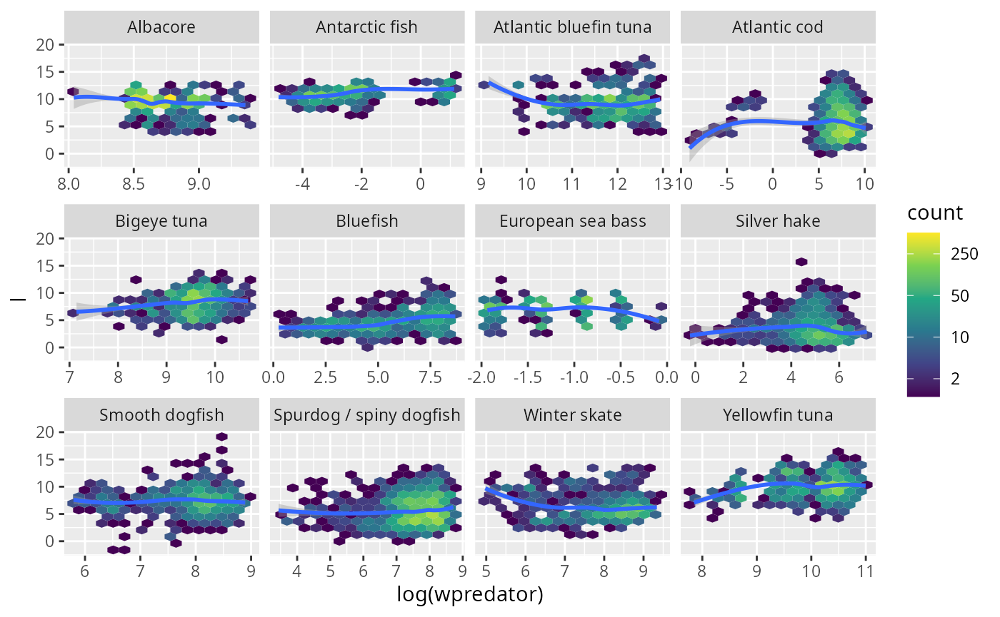
I think it is fair to say that these plots do not exhibit any systematic trend.
Gaussian sometimes fits
Next we fit normal densities:
grid <- seq(0, max(stomach$l), length = 100)
normaldens <- plyr::ddply(stomach, "Species", function(df) {
data.frame(
l = grid,
density = dnorm(grid, mean(df$l), sd(df$l))
)
})
ggplot(stomach) +
geom_density(aes(l, weight = weight_numbers),
fill = "#00BFC4", bw = 0.4) +
facet_wrap(~Species, scales = "free_y", ncol = 4) +
xlab("Log of predator/prey mass ratio") +
geom_line(aes(l, density), data = normaldens,
colour = "blue")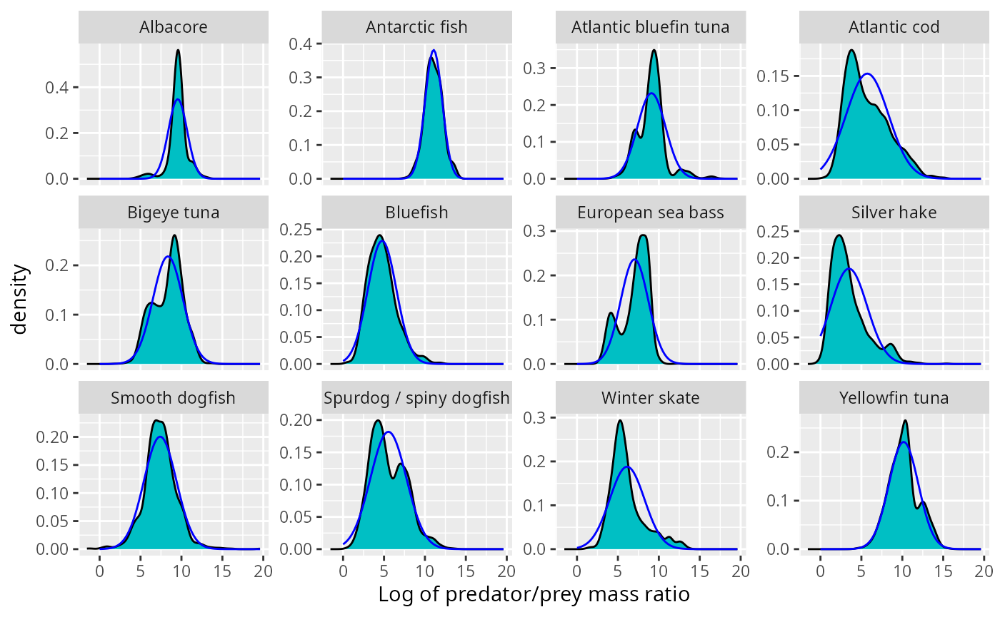
This does not look too bad at first sight. However we now know to also look at the biomass distribution. We plot the normal density arising from the above fits on top of the observed biomass distribution.
grid <- seq(0, max(stomach$l), length = 100)
shifted_normaldens <- plyr::ddply(stomach, "Species", function(df) {
data.frame(
l = grid,
density = dnorm(grid, mean(df$l) - sd(df$l)^2, sd(df$l))
)
})
ggplot(stomach) +
geom_density(aes(l, weight = weight_biomass),
fill = "#F8766D", bw = 0.4) +
facet_wrap(~Species, scales = "free_y", ncol = 4) +
xlab("Log of predator/prey mass ratio") +
ylab("Biomass density") +
geom_line(aes(l, density), data = shifted_normaldens,
colour = "red")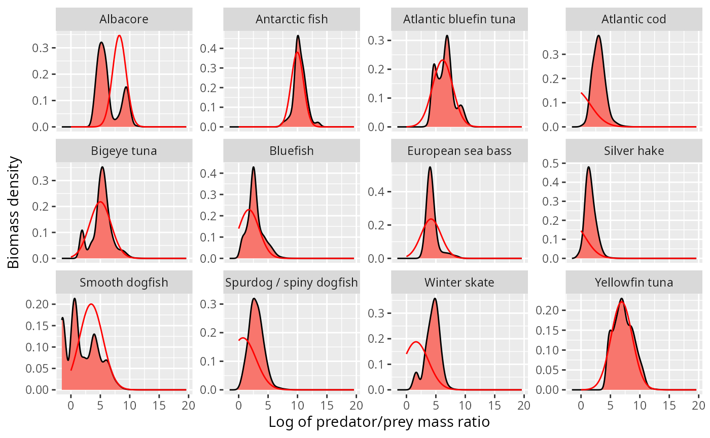
This looks o.k. for some species, but is totally wrong for others, in particular the atlantic cod and the silver hake, where the normal distribution incorrectly predicts most of the biomass to be at sizes larger than the predator size (negative log of predator/prey mass ratio).
Truncated exponential
Next we fit truncated exponential distributions.
mle_texp <- function(df) {
loglik <- function(alpha, ll, ul, lr, ur) {
L <- dtexp(df$l, alpha, ll, ul, lr, ur)
- sum(log(L) * df$weight_numbers)
}
mle2(loglik, start = list(
alpha = 0.5,
ll = min(df$l),
lr = max(df$l),
ul = 5,
ur = 5))
}
est <- stomach %>%
group_modify(~ broom::tidy(mle_texp(.x))) %>%
select(Species, term, estimate) %>%
spread(term, estimate)
est## # A tibble: 12 × 6
## # Groups: Species [12]
## Species alpha ll lr ul ur
## <chr> <dbl> <dbl> <dbl> <dbl> <dbl>
## 1 Albacore 1.52 3.14 9.69 5.01 3.39
## 2 Antarctic fish -0.151 10.2 12.2 2.24 1.92
## 3 Atlantic bluefin tuna -0.972 9.11 18.3 1.94 4.96
## 4 Atlantic cod -0.205 2.62 11.7 2.57 0.964
## 5 Bigeye tuna 0.260 4.63 10.3 2.79 1.94
## 6 Bluefish -0.603 3.69 12.0 1.98 4.79
## 7 European sea bass 0.352 3.16 8.94 6.24 4.44
## 8 Silver hake -0.435 1.37 15.6 2.80 4.96
## 9 Smooth dogfish 0.815 -2.22 7.29 5.04 1.58
## 10 Spurdog / spiny dogfish -0.213 2.98 10.2 2.03 1.08
## 11 Winter skate -0.473 4.41 13.6 2.36 5.78
## 12 Yellowfin tuna -0.483 9.20 14.5 1.59 3.74We plot the resulting fits:
grid = seq(-5, 18, length.out = 200)
texpdens <- plyr::ddply(est, "Species", function(df) {
data.frame(
l = grid,
Numbers = dtexp(grid, df$alpha, df$ll, df$ul, df$lr, df$ur),
Biomass = dtexp(grid, df$alpha - 1, df$ll, df$ul, df$lr, df$ur)
)}) %>%
gather(Type, Density, Numbers, Biomass)
ggplot(binned_stomach) +
geom_col(aes(l, Density, fill = Type)) +
facet_grid(Species ~ Type, scales = "free_y") +
xlab("Log of predator/prey mass ratio") +
geom_line(aes(l, Density, colour = Type), data = texpdens)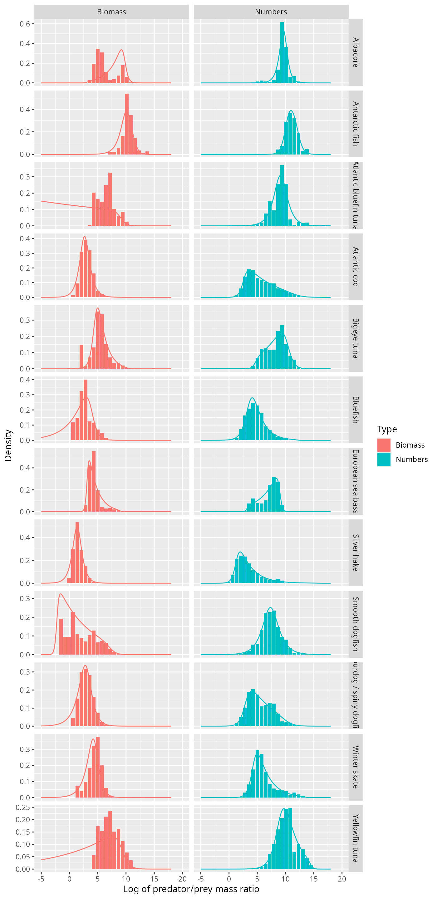
Certainly for those species where the normal distribution did not fit at all, like Atlantic Cod and Silver Hake, the truncated exponential fits really well, and does so for both the number density and the biomass density.
Next steps
We have now seen that for some species fitting a normal distribution to the log of the predator/prey size ratio works well, whereas for others a truncated exponential distribution fits much better. A truncated exponential is perhaps a somewhat unusual distribution. Will any of the more standard distributions like Weibull or Gamma also fit well?
A similar analysis, fitting distributions to the observed predator/prey size ratios in stomach contents, should be performed for other stomach content data sets.
We have here used all observations for a predator species, independently of the geographic origin of the observation. It is quite likely that the diet is different in different geographic locations, for example because the distribution of prey will be different. Perhaps if we had allowed a mixture of normal distributions, this would have given better fits.
When fitting the distributions we made the assumption that all observations are independently drawn from these distributions. This independence assumption is of course not valid. Observations from the same cruise are going to be more similar to each other than those from different cruises. Observations from the same stomach are more similar to each other than those from different stomachs. This does seem to call for hierarchical modelling, perhaps with mixed effects models.
It is likely that the preferred predator/prey size ratio is going to be more constant across regions than the realised predator/prey size ratio, so if we had information about the abundance of different prey sizes, we could do a better analysis of the data. Unfortunately this information is not usually available.
Appendix 1: Density functions
In order to avoid confusion, I will discuss in detail the different ways in which we could describe the size distribution of the stomach items in terms of different density functions.
Prey item distribution
We can describe the size distribution of prey in stomachs of predators of size by the number density function . This is a density in , so that the number of prey items with a size between and is .
Alternatively we can describe the size distribution by the probability density that a random prey item in a stomach of a predator of size has size . This probability density function is simply the normalised version of the number density: where the normalisation factor is the total number of prey items, The sizes of the actual observed prey items in the data set are seen as samples from this probability distribution.
Rather than working with the prey size , we can also work with the predator/prey mass ratio . The probability distribution of this is
It is actually a good idea to work with the logarithm of the predator/prey mass ratio . Its distribution is We will be making the fundamental assumption that the distribution of the predator/prey mass ratio is independent of the predator size: (and hence also ). Of course we should look at the data to see if this assumption is reasonable.
Biomass distribution
We would also be interested in how the prey biomass is distributed over the prey sizes, because as far as the predator is concerned, it is the amount of biomass that counts, not the number of individuals that are needed to make up that biomass. So instead of the number density , we would look at the biomass density , defined so that is the total biomass of prey items with sizes between and . The number density and the biomass density are simply related: Again there is a probability density associated to this: This gives the probability that a randomly chosen unit of biomass in the stomach of a predator of size comes from a prey item of size . The relation to the earlier density is
To see how this biomass density is related to the observations of stomach contents, consider that instead of recording one observation for each prey individual, we could in principle record one observation for each unit of biomass in the stomach. This would correspond to splitting each single observation for a prey item of size into separate observations. This new larger set of observations could then be seen as a sample from the distribution described by the biomass density .
Again we can transform the probability density to different variables. In particular the density as a function of is So again is independent of .
Transforming densities
We have seen above how the biomass density is obtained from the number density by multiplying by and then normalising again. More generally we might want to transform by multiplying by for some real number . For the three families of distributions that we are interested in, the normal distribution, the gaussian mixture distribution and the truncated exponential distribution, the miracle is that the transformed density is again a distribution of the same type, just with transformed parameters. We will now derive how the parameters are being transformed.
Normal distribution
If we start with the normal density then This can be checked by expanding the square: So the resulting new distribution has a shifted mean of but the same variance.
Gaussian mixture distribution
Similarly if is the density of a Gaussian mixture distribution, then We see that the coefficients of the Gaussians have changed. To get the new normalised distribution we also need to divide by the area under the above density, which is So with and
Let us check this analytic result also numerically. We first define the density function
c <- c(0.2, 0.3, 0.5)
mu <- c(3, 4, 6)
sigma <- c(0.2, 0.5, 2)
fl <- function(l, c, mu, sigma) {
f <- 0
for (i in seq_along(c)) {
f <- f + c[i]*dnorm(l, mean = mu[i], sd = sigma[i])
}
f
}
l <- seq(0, 15, by = 0.1)
plot(l, fl(l, c, mu, sigma), type = "l", lty = 3, ylab = "Density")
alpha = -1
shifted_fl <- exp(-alpha * l) * fl(l, c, mu, sigma)
shifted_fl <- shifted_fl / sum(shifted_fl * 0.1)
lines(l, shifted_fl, col = "green", lty = 1)
mu_shifted <- mu - alpha * sigma^2
c_shifted <- c * exp(-alpha * mu + alpha^2 / 2 * sigma^2)
c_shifted <- c_shifted / sum(c_shifted)
lines(l, fl(l, c_shifted, mu_shifted, sigma), col = "blue", lty = 2)
legend("topright", legend = c("original", "numerically shifted", "analytically shifted"),
col = c("black", "green", "blue"), lty = c(3, 1, 2), cex = 0.8)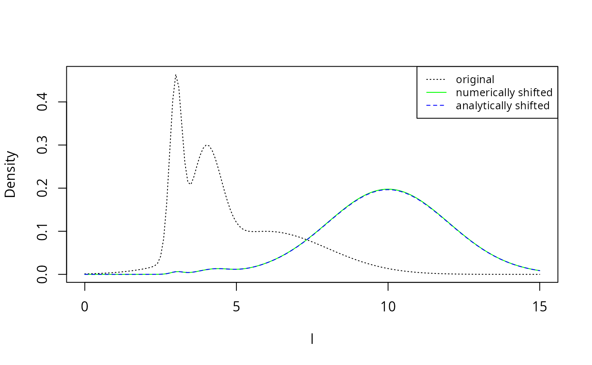
The numerically shifted line in green is perfectly covered by the analytically shifted line in blue, thereby confirming the analytic results above.Appendix 2: Maximum likelihood fit for truncated exponential
Fitting the exponential distribution by fitting a linear model to the logged histogram is not really appropriate. A better method would be to fit directly to the data using the maximum likelihood principle. However this too is problematic as we will see in this appendix.
Number distribution
The density of the truncated exponential distribution is where
Due to the way the parameters and enter in the normalisation of the probability density, the maximum likelihood will be attained at the largest possible value for and the smallest possible value for , i.e., they are determined by the smallest and largest value appearing in the dataset.
It remains only to estimate the rate parameter . The log likelihood function is
In order to avoid having to minimize this numerically, we now make the approximation that is large enough so that is negligibly small compared to . Then To find the value of that maximizes this likelihood we set and solve for . This gives where is the average over all .
est <- stomach %>%
group_by(Species) %>%
summarise(lbar = weighted.mean(l, weight_numbers),
lmax = max(l),
lmin = min(l),
alpha = 1/(lmax - lbar))
est## # A tibble: 2 × 5
## Species lbar lmax lmin alpha
## <chr> <dbl> <dbl> <dbl> <dbl>
## 1 Anchovy 22.4 25.3 6.78 0.350
## 2 Sardine 23.4 27.1 9.07 0.273Note how sensitive these estimates are to the value of
lmax. To see why these are not good estimates, let us have
a look what the fit looks like.
dnumbers <- function(l, alpha, lmax) {
d <- as.numeric(l <= lmax)
d[d > 0] <- dexp(lmax - l[d > 0], alpha)
return(d)
}
dbiomass <- function(l, alpha, lmin) {
d <- as.numeric(l >= lmin)
d[d > 0] <- dexp(l[d > 0] - lmin, 1 - alpha)
return(d)
}
selected_species <- "Sardine"
binned_stomach %>%
filter(Species == selected_species) %>%
ggplot() +
geom_col(aes(l, Density, fill = Type)) +
stat_function(fun = dnumbers,
args = list(alpha = est$alpha[est$Species == selected_species],
lmax = est$lmax[est$Species == selected_species]),
colour = "blue") +
stat_function(fun = dbiomass,
args = list(alpha = est$alpha[est$Species == selected_species],
lmin = est$lmin[est$Species == selected_species]),
colour = "red") +
xlab("Log of Predator/Prey mass ratio") +
expand_limits(x = c(0, 30))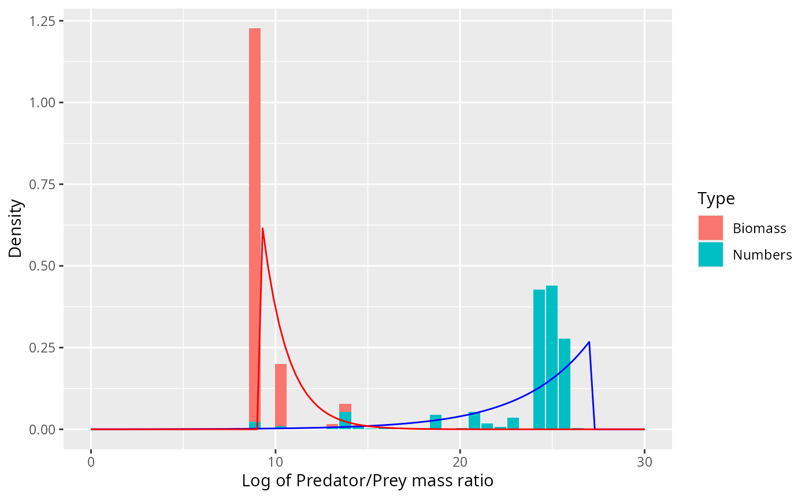
Clearly the density should not rise exponentiall all the way to the
largest observed value lmax but there should be a smoother
cutoff. There should also be a smoother cutoff at lmin.
Biomass distribution
If is given by the truncated exponential distribution with rate parameter then the biomass distribution is given by the truncated exponential distribution with rate parameter . If this is negative enough that is negligibly small compared to , then To find the value of that maximizes this likelihood we set and solve for . This gives where is the weighted mean
est2 <- stomach %>%
group_by(Species) %>%
summarise(lbar = weighted.mean(l, weight_numbers),
lmax = max(l),
lmin = min(l),
alpha = 1/(lmax - lbar),
lbarw = weighted.mean(l, weight_biomass),
alpha_B = 1 / (lmin - lbarw),
diff = alpha - alpha_B
)
est2 %>% select(Species, alpha, alpha_B, diff)## # A tibble: 2 × 4
## Species alpha alpha_B diff
## <chr> <dbl> <dbl> <dbl>
## 1 Anchovy 0.350 -0.622 0.973
## 2 Sardine 0.273 -3.13 3.40The difference between and should be 1. This works quite well for anchovy, but fails dramatically for sardine. The failure is not surprising: the estimate for depends sensitively on , which the maximum likelihood principle told us to choose to be equal to the smallest observed . However, due to the small number of observations with small values for , it may well be that the true smallest value for is smaller than the smallest observed and has simply by chance not been detected.
A natural question to ask therefore is if with a different choice for the estimate for would agree with our estimate for . So we set and solve for :
est3 <- stomach %>%
group_by(Species) %>%
summarise(lbar = weighted.mean(l, weight_numbers),
lmax = max(l),
lmin = min(l),
alpha = 1/(lmax - lbar),
lbarw = weighted.mean(l, weight_biomass),
lmin_B = lbarw + 1 / (alpha - 1),
diff = lmin - lmin_B
)
est3 %>% select(Species, lmin, lmin_B, diff)## # A tibble: 2 × 4
## Species lmin lmin_B diff
## <chr> <dbl> <dbl> <dbl>
## 1 Anchovy 6.78 6.85 -0.0671
## 2 Sardine 9.07 8.02 1.06So the number distribution and the biomass distribution would be consistent with each other if the actual for sardine was just a little bit smaller than the smallest observed one. This is not unreasonable.